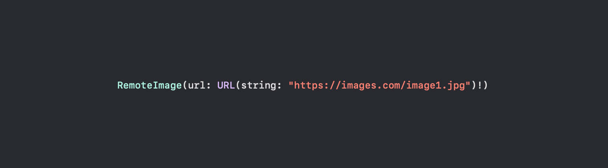
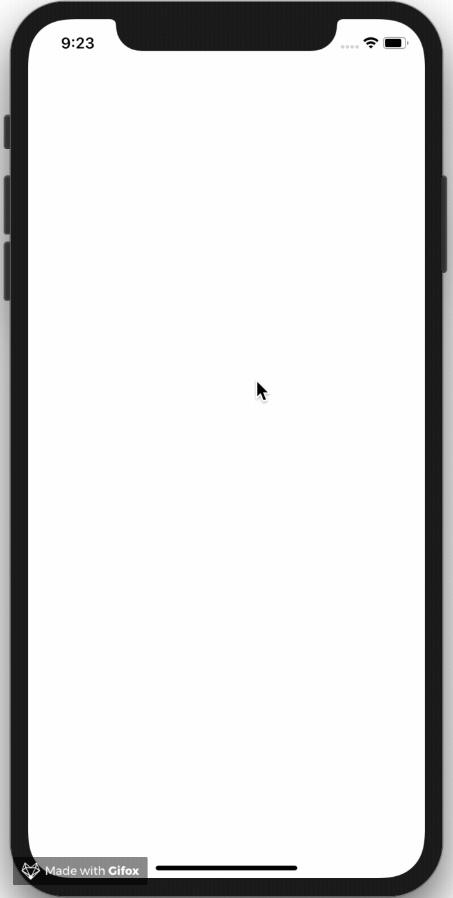

12. Aug 2019
Fictional RemoteImage initializer
Update 2019/08/14: Now available as a Swift package 🚀
I want to implement a SwiftUI pendant of the UIKit remote image view we created at my current employer. I can’t share the code but believe me that compared to the following SwiftUI implementation our UIKit code is more complex, uses an external framework, and has more lines of code.
Let’s start with a short description of the article’s goal:
Our goal is to create a view that fetches the image at a given URL, shows a loading view during fetching, caches the image, uses the existing SwiftUI image view, and shows an error view if needed.
With this end in mind, let’s start coding.
The code mainly consists of three components.
The remote image view can have three different states: error, image, and loading. It should be able to render itself dependent on its current state.
enum RemoteImageState {
case error(_ error: Error)
case image(_ image: UIImage)
case loading
}
We need a service that takes care of fetching and caching the image. In addition to that, it should manage the current state of the related remote image.
Fetching image
The HTTP request is done using the standard tools (URLSession and URLRequest) in combination with a simple data task publisher and a sink subscriber (Combine framework).
Caching image
Caching is done with NSCache. Simple, right? All remote images in one SwiftUI application should share the same cache, therefore the cache is static. The cache can easily be cleared through its removeAllObjects() function.
State changes
The service conforms to the ObservableObject protocol and propagates the state changes made in the fetchImagefunction through a simple PassthroughSubject to every subscriber.
final class RemoteImageService: ObservableObject {
private var cancellable: AnyCancellable?
static let cache = NSCache<NSURL, UIImage>()
var state: RemoteImageState = .loading {
didSet {
objectWillChange.send()
}
}
let objectWillChange = PassthroughSubject<Void, Never>()
func fetchImage(atURL url: URL) {
cancellable?.cancel()
if let image = RemoteImageService.cache.object(forKey: url as NSURL) {
state = .image(image)
return
}
let urlSession = URLSession.shared
let urlRequest = URLRequest(url: url)
cancellable = urlSession.dataTaskPublisher(for: urlRequest)
.map { UIImage(data: $0.data) }
.receive(on: RunLoop.main)
.sink(receiveCompletion: { completion in
switch completion {
case .failure(let failure):
self.state = .error(failure)
default: ()
}
}) { image in
if let image = image {
RemoteImageService.cache.setObject(image, forKey: url as NSURL)
self.state = .image(image)
} else {
self.state = .error(RemoteImageServiceError.couldNotCreateImage)
}
}
}
}
This last component is the view itself. It uses an instance of RemoteImageService and renders itself dependent on the state in the service.
The initializer expects a URL and a ViewBuilder block for each state (error, image, and loading).
Fetching image
As soon as the LoadingView appears on the screen, the fetchImage function of the RemoteImageService instance is triggered.
Customising image appearance
Internally the RemoteImage view uses the existing Image view of SwiftUI. To be able to customise the appearance of that Image view, it’s exposed through the related ViewBuilder block.
An error occurred
If an error occurs, the error view ViewBuilder is called. The error is passed to the ViewBuilder block and can be used to create an error view.
AnyView
In this implementation, I had to use the type erased wrapper AnyView to erase the different types of views returned in the switch.
Normally the Group view could solve that kind of problem. But the content block of the Group view is a ViewBuilderblock, and you can’t use the switch statement below (an enum with associated values) in a ViewBuilder block.
struct RemoteImage<ErrorView: View, ImageView: View, LoadingView: View>: View {
private let url: URL
private let errorView: (Error) -> ErrorView
private let imageView: (Image) -> ImageView
private let loadingView: () -> LoadingView
@ObservedObject private var service: RemoteImageService = RemoteImageService()
var body: AnyView {
switch service.state {
case .error(let error):
return AnyView(
errorView(error)
)
case .image(let image):
return AnyView(
self.imageView(Image(uiImage: image))
)
case .loading:
return AnyView(
loadingView()
.onAppear {
self.service.fetchImage(atURL: self.url)
}
)
}
}
init(url: URL, @ViewBuilder errorView: @escaping (Error) -> ErrorView, @ViewBuilder imageView: @escaping (Image) -> ImageView, @ViewBuilder loadingView: @escaping () -> LoadingView) {
self.url = url
self.errorView = errorView
self.imageView = imageView
self.loadingView = loadingView
}
}
Last but not least, we take a look at a usage example.
The created Remote Image view is easy to use. Just pass a URL, your error view, your image, and your loading view to the initializer.
struct ContentView: View {
private let url = URL(string: "https://images.unsplash.com/photo-1524419986249-348e8fa6ad4a?ixlib=rb-1.2.1&ixid=eyJhcHBfaWQiOjEyMDd9&auto=format&fit=crop&w=1950&q=80")!
var body: some View {
RemoteImage(url: url, errorView: { error in
Text(error.localizedDescription)
}, imageView: { image in
image
.resizable()
.aspectRatio(contentMode: .fit)
}, loadingView: {
Text("Loading ...")
})
}
}
Take a look at how I customised the appearance of the Image: I made it resizable and changed the content mode to fit.
Animated image showing the result on the iPhone XR simulator
Congratulations! You finished this lesson about creating a remote image SwiftUI view.
Thanks for reading this article. I hope you continue reading my articles. Stay tuned.
See it on GitHub at https://github.com/crelies/RemoteImage-SwiftUI